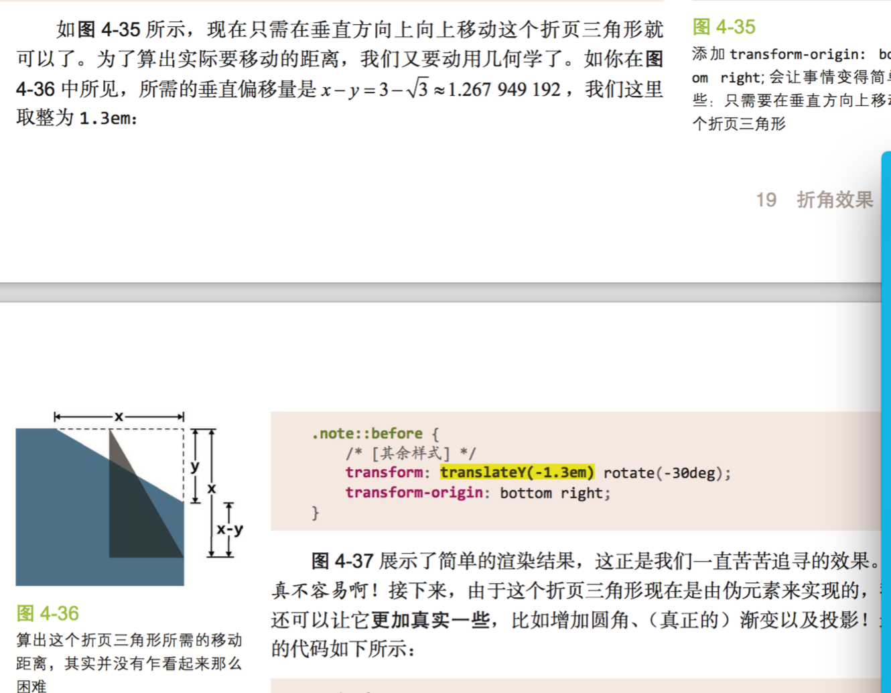

缺陷: 当折角元素之下的背景不是纯色,而是一幅图案、一层纹理、一张 照片、一幅渐变或其他任何一种背景图像时。
当我们想要一个 45°以外的(旋转的)折角时
用border-color border-width实现折角 有局限
45°折角的解决方案 用 linear-gradient实现
美观、灵活、简约的折角效果。
请确保该元素已经留出了不 小于折角尺寸的内边距,否则文 本将有可能重叠在折页部分之上
45°折角的解决方案
增加一个 暗色的三角形来实现翻折效果。实现方法是增加另一层渐变来生成这个三 角形并将其定位在右上角,这样就可以通过 background-size 来控制折角 的大小。
150°折角的解决方案
增加一个 暗色的三角形来实现翻折效果。实现方法是增加另一层渐变来生成这个三 角形并将其定位在右上角,这样就可以通过 background-size 来控制折角 的大小。
现实中折角带旋转功能
把折页三角形的 width 和 height 对调,以此改变它的方向,这样 就可以得到跟折页缺口对称的三角形,而不是一个可以补足折页缺口的三角 形。

150°折角的解决方案
增加一个 暗色的三角形来实现翻折效果。实现方法是增加另一层渐变来生成这个三 角形并将其定位在右上角,这样就可以通过 background-size 来控制折角 的大小。
-
如果要改变元素的宽高或其他尺寸(比如内边距等),只需要修改 一处。
-
如果要改变元素的背景色,则只需要修改两处(如果不写回退样式 则只有一处)。
-
如果要修改折页的大小,需要修改四处,并做一些复杂的计算。
-
如果要修改折页的角度,则需要修改五处,并做一些更加复杂的
计算。
使用预处理期简化
@mixin folded-corner($background, $size, $angle: 30deg) {
position: relative;
background: $background; /* 回退样式 */ background:
linear-gradient($angle - 180deg, transparent $size, $background 0);
border-radius: .5em;
$x: $size / sin($angle);
$y: $size / cos($angle);
&::before { content: '';
position: absolute;
top: 0; right: 0;
background: linear-gradient(to left bottom,
transparent 50%, rgba(0,0,0,.2) 0,
rgba(0,0,0,.4)) 100% 0 no-repeat; width: $y; height: $x;
transform: translateY($y - $x)
rotate(2*$angle - 90deg); transform-origin: bottom right;
border-bottom-left-radius: inherit;
box-shadow: -.2em .2em .3em -.1em rgba(0,0,0,.2); }
}
/* 当调用时... */ .note {
@include folded-corner(#58a, 2em, 40deg); }